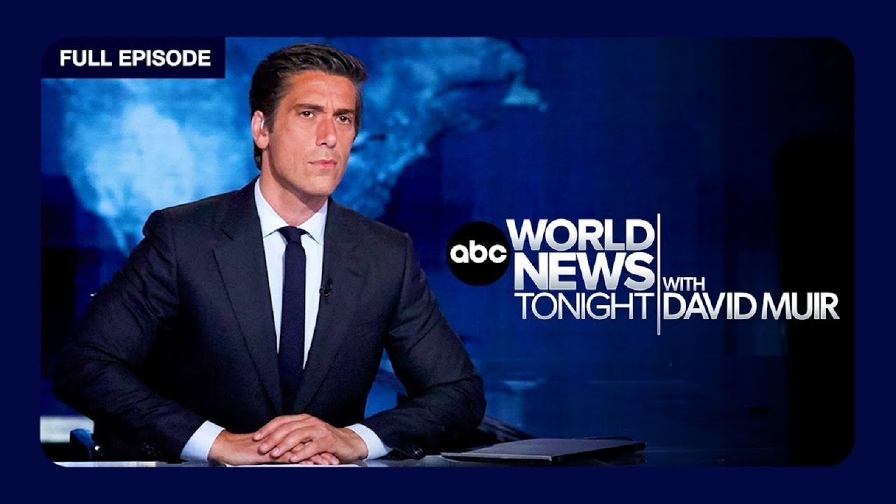

【ABC World News 特朗普支出法案面临关键考验｜FBI警告航空公司遭黑客攻击｜伊朗紧张局势｜威尼斯奢华婚礼 20250629】
Summary: Breaking news on GOP Senators' critical vote for Trump's spending bill, FBI warnings on airline hackers, severe holiday travel disruptions, and global headlines including Iran tensions and a lavish Venice wedding.
摘要： 突发新闻：共和党参议员对特朗普支出法案的关键投票，FBI警告航空公司遭黑客攻击，假日旅行受恶劣天气影响，以及伊朗紧张局势和威尼斯奢华婚礼等全球头条。

⏱️ Estimated Reading Time: 32 min
📚 六级生词 📚 雅思生词 📚 托福生词 📚 专八生词 📚 SAT生词 📚 考研生词 📚 GRE生词 📚 高考生词
Tonight breaking news, GOP Senators right now facing a critical test for President Trump's so-called big, beautiful bill ahead of a July 4 deadline.
今晚突发新闻，共和党参议员正面临对特朗普总统所谓“庞大而美好”法案的关键考验，7月4日截止日期临近。
The warning from the FBI about hackers allegedly targeting airlines and severe storms on the move as millions prepare for holiday travel.
FBI警告称黑客可能瞄准航空公司，同时恶劣天气来袭，数百万人准备假日出行。
First of big days, stretching into the evening on Capitol Hill as the Senate holds a rare Saturday session.
国会山迎来重要一天，参议院罕见举行周六会议，议程持续至晚间。
Lawmakers trying to persuade last-minute holdouts to get President Trump's mega-spending bill across the finish line.
立法者正试图说服最后时刻的反对者，以推动特朗普总统的巨额支出法案通过。
The bill facing major hurdles with some Republicans bulking at the price tag, estimated to increase the deficit by nearly $3 trillion.
该法案面临重大障碍，部分共和党人对其成本表示担忧，预计将使赤字增加近3万亿美元。
And what the bill now says about tax cuts and Medicaid.
法案内容涉及减税和医疗补助计划的调整。
Also tonight, the new warning from the FBI, hackers allegedly targeting airlines.
此外，FBI发布新警告，称黑客瞄准航空公司。
This as Hawaiian Airlines and Canada's WestJet hit with cyber attacks this month.
此前，夏威夷航空和加拿大西捷航空本月已遭遇网络攻击。
And with 72 million Americans expected to hit the roads and the skies for the 4th of July holiday, the severe weather threat, the Midwest and Northeast, bracing for thunderstorms and damaging winds, are weather team tracking it all.
预计7200万美国人将在国庆假期出行，中西部和东北部面临强雷暴和大风威胁，气象团队正密切监测。
Honoring the Minnesota lawmaker, Melissa Hortman and her husband, gunned down in their home two weeks ago after what prosecutors called a political assassination.
悼念明尼苏达州议员梅丽莎·霍特曼及其丈夫，两周前在家中被枪杀，检方称此为政治暗杀。
Former President Joe Biden and former Vice President Kamala Harris among those at the funeral.
前总统乔·拜登和前副总统卡玛拉·哈里斯等出席葬礼。
Thousands lining the streets of Tehran as Iran held state funerals for military commanders and nuclear scientists killed during the conflict with Israel.
数千人涌上德黑兰街头，伊朗为在与以色列冲突中丧生的军事指挥官和核科学家举行国葬。
And what President Trump said about the possibility of bombing Iran again.
特朗普总统就再次轰炸伊朗的可能性发表言论。
The new twist in that hacking class action lawsuit against a former University of Michigan assistant football coach.
针对密歇根大学前助理足球教练的黑客集体诉讼出现新转折。
The NFL's Jim Harbaugh now added as a defendant what we're learning tonight.
NFL教练吉姆·哈博今晚被追加为被告。
The billionaire and his bride, the new details and the protests on the lavish Venice wedding of Jeff Bezos and Lauren Sanchez.
亿万富翁杰夫·贝索斯与劳伦·桑切斯的威尼斯奢华婚礼新细节及抗议活动。
Bruce Springsteen offering fans something they've never heard before and the tearful tribute from the NHL draft, the 17 year old number one pick honoring his late mother.
布鲁斯·斯普林斯汀发布未公开作品，NHL选秀现场17岁状元含泪致敬已故母亲。
From ABC News, World Headquarters and New York, this is World News Tonight.
这里是ABC新闻纽约全球总部，《世界新闻今晚报》。
Good evening, thanks for joining us on this Saturday. I'm Wade Johnson, several developing stories as we come on tonight.
晚上好，感谢周六收看，我是韦德·约翰逊，今晚有多条动态新闻。
The warning from the FBI about hackers allegedly targeting airlines and severe storms on the move is millions prepared for holiday travel.
FBI警告称黑客瞄准航空公司，恶劣天气影响数百万人假日出行准备。
But we begin tonight with breaking news, a crucial vote for President Trump's so-called big, beautiful bill.
但今晚我们首先关注突发新闻：特朗普总统所谓“庞大而美好”法案的关键投票。
The Senate holding a rare Saturday session going into the evening to advance the president's tax cuts and spending bill.
参议院罕见举行周六晚间会议，以推进总统的减税和支出法案。
Democrats now insisting that the bill be read aloud on the floor which could take hours.
民主党人坚持要求现场逐条朗读法案，可能耗时数小时。
And Trump putting the pressure on Republican lawmakers to get the measure to his desk by Independence Day, less than a week away.
特朗普向共和党议员施压，要求法案在不到一周后的独立日前提交至其办公桌。
But the ultimate fate of the legislation is still in question, with some Republicans holding out over the price tag and proposed cuts to Medicaid.
但法案最终命运仍存疑，部分共和党人因成本和医疗补助削减计划持反对意见。
ABC's J.O. Brian leads us off from Capitol Hill.
ABC的J.O.布莱恩从国会山发回报道。
Tonight with President Trump's self-imposed Fourth of July deadline looming, Senate Republicans sprinting to lock down enough support ahead of a key test vote on the president's so-called one-big, beautiful bill.
随着特朗普自设的7月4日截止日临近，参议院共和党人正全力争取支持，以通过总统所谓“单一庞大而美好”法案的关键测试投票。
The nearly 1,000-page legislative package extends Trump's 2017 tax cuts, adds new provisions like no taxes on tips and overtime, and makes significant cuts to Medicaid, the nonpartisan Congressional budget office estimating it could lead to nearly 11 million people losing their insurance over the next decade.
这份近千页的法案延长特朗普2017年减税政策，新增小费加班免税条款，大幅削减医疗补助，无党派国会预算办公室估计未来十年可能导致近1100万人失去保险。
Democrats now planning to force a potentially hours-long reading of the entire GOP mega-bill on the Senate floor, likely pushing a final vote on the legislation into late Sunday or Monday.
民主党计划强制在参议院逐条朗读整个共和党大型法案，可能耗时数小时，最终投票或推迟至周日深夜或周一。
With a laundry list of campaign promises on the line, Trump staying in DC this weekend to push the bill through, taking a trio of senators golfing at his course in Virginia, and telling Republicans he wants the bill ready for his signature before July 4th.
面对一系列竞选承诺，特朗普本周末留驻华盛顿推动法案，邀请三位参议员赴弗吉尼亚高尔夫球场，并告知共和党人希望在7月4日前签署法案。
The president is very engaged. The president has been engaged this whole time. He's never not been engaged.
总统非常投入，始终积极参与，从未懈怠。
Sanders now working through the weekend forced to rewrite key pieces of the legislation after some provisions were tossed out by the Chamber's nonpartisan rulekeeper.
桑德斯周末加班重写法案关键部分，此前部分条款被议会无党派规则顾问否决。
Senate Majority Leader John Thune can only afford to lose three Republicans, and summon his party, Balking, at the bill's price tag, estimated to increase the national deficit by $2.8 trillion by 2034.
参议院多数党领袖约翰·图恩最多只能失去三张共和党票，党内成员因法案成本却步——预计到2034年将增加2.8万亿美元国家赤字。
President Trump labeling those GOP opponents grandstanders.
特朗普称这些共和党反对者是“作秀者”。
Are you a grandstander? How would you support conservative, physically conservative?
你是作秀者吗？如何支持真正的保守派？
Republicans pretend and profess to be concerned with the debt, but in the end vote for the spending as well.
共和党人假装关心债务，最终却支持支出。
What if this bill passes the Senate, it would have to go back to the House where Speaker Johnson is facing a razor-thin GOP majority and growing opposition tonight to some of these Senate rewrites.
若法案通过参议院，将返回众议院，议长约翰逊面临微弱共和党多数优势，且对参议院修订内容的反对声渐长。
Remember, the original version of this bill only passed out of that Chamber by just one vote.
需注意，该法案原始版本在众议院仅以一票优势通过。
And the clock is ticking, J.O. Brian, thank you.
时间紧迫，J.O.布莱恩，谢谢。
Now to the escalating tensions over trade.
现在关注不断升级的贸易紧张局势。
President Trump ending talks with Canada over their plan to collect digital services taxes from American tech giants.
特朗普终止与加拿大就其对美国科技巨头征收数字服务税计划的谈判。
Let's get right to ABC's Senior White House Correspondence, Lena Wang.
请ABC高级白宫记者莉娜·王带来报道。
So, Selena, how did these talks break down?
那么，赛琳娜，谈判如何破裂？
Well, President Trump is putting the blame on Canada for its new tax on American tech companies set to go into effect on Monday.
特朗普总统归咎于加拿大对美科技公司的新税，该税将于周一生效。
Canadian officials estimate it will cause US tech giants more than $2 billion a year.
加拿大官员估计这将使美国科技巨头每年损失超20亿美元。
Trump claims that Canada has been difficult and says that the US holds all the cards when it comes to trade negotiations.
特朗普称加拿大态度强硬，但表示美国掌握贸易谈判所有筹码。
Now, currently, some Canadian imports are tariffed at 25 percent with steel and aluminum at 50 percent.
目前部分加拿大进口商品关税为25%，钢铁铝制品达50%。
The President now says he'll be setting a new tariff rate on Canadian goods within the next week.
总统表示下周将对加拿大商品设定新关税税率。
Metta, which owns Facebook, is thanking President Trump for, quote, standing up in the face of unprecedented tax from other governments.
Facebook母公司Meta感谢特朗普总统“直面他国前所未有的征税”。
And the deadline for the US to reach trade deals with the host of other countries is also fast approaching.
美国与多国达成贸易协议的截止日期也临近。
Now, less than two weeks away, if those trade deals aren't reached by July 9th or if that deadline is not extended, Steve Terrence could go into effect with...
若7月9日前未达成协议或延期，史蒂夫·特伦斯条款可能生效...
So, Lena Wang at the White House for us, thank you.
白宫记者莉娜·王，谢谢。
Now to the FBI warning about hackers allegedly targeting airlines ahead of the busy July 4th holiday, this as two airlines say they've already been hit and severe storms triggering hundreds of flight cancellations at Atlanta's Busy Airport.
现在关注FBI警告：黑客瞄准繁忙国庆假期的航空公司，两家航司称已受攻击，恶劣天气致亚特兰大机场数百航班取消。
Here's ABC's Faith of Uber.
ABC记者费斯·乌伯报道。
Tonight, the looming threats facing Americans as millions gear up for the July 4th holiday travel.
今晚，数百万美国人准备国庆出行之际面临双重威胁。
The FBI is warning cybercriminals have airlines in their crosshairs, alleging that a hacking group called scatter spider is aiming to steal sensitive information by impersonating airline employees and contractors.
FBI警告网络罪犯瞄准航空公司，称黑客组织“散蜘蛛”通过冒充员工和承包商窃取敏感信息。
And just yesterday, tech issues also delaying some American Airlines flights unclear whether it's related.
昨日美国航空因技术问题延误部分航班，尚不明确是否相关。
But it all comes as AAA projects about 72 million people will be traveling next week for Independence Day celebrations.
美国汽车协会预计下周7200万人将出行庆祝独立日。
Today, more than a thousand flights canceled. The caused severe weather that packed a punch across the mid-Atlantic and southeast.
今日超千架航班取消，因中大西洋和东南部遭遇恶劣天气。
They told us that there had been severe hail and a bunch of their planes were damaged and needed to be inspected, so no flights were going to be coming in Friday night or Saturday morning into Atlanta.
航司称严重冰雹致多架飞机受损需检查，周五晚至周六早无航班抵达亚特兰大。
Hail and strong winds forcing Delta to cancel over 400 flights in and out of Atlanta's Hartfield, Jackson International Airport.
冰雹和强风迫使达美航空取消哈茨菲尔德-杰克逊机场超400架次航班。
All the flights are canceled. We can't get another flight back.
所有航班取消，我们无法改签。
An air traffic control tower in Atlanta forced to evacuate due to strong winds leaving a skeleton crew running operations.
亚特兰大空管塔因强风疏散，仅留骨干人员维持运作。
Ground room is evacuated to hours, that's correct? Oh, yeah. Yeah, it's just me, one other controller, the supervisor and traffic management.
地面人员疏散两小时？是的，仅剩我、另一管制员、主管和流量管理人员。
Those ripple effects from Atlanta, along with severe weather at other major travel hubs, triggering ground stops, cancellations and delays at airports in Washington, D.C., Charlotte and Dallas.
亚特兰大余波及其他枢纽恶劣天气，致华盛顿、夏洛特和达拉斯机场停飞、取消及延误。
And with almost all those Delta planes were now back in service, but the airline now saying it expects several hundreds more cancellations this weekend as it recovers from those storms.
达美航空多数飞机已恢复服务，但预计本周末仍有数百架次取消以应对风暴影响。
Wit. Faith, the Boobay, thank you.
费斯·乌伯，谢谢。
Let's get right to meteorologist Danny Baxter from our New York station, W-A-B-C, and Danny, where's the greatest threat for storms right now?
现在连线纽约WABC气象学家丹尼·巴克斯特，丹尼，目前最大风暴威胁在哪里？
So the southeast took the brunt of it last night. There's typical summertime storms for them tonight.
东南部昨夜首当其冲，今晚将迎典型夏季风暴。
The severe weather threat now shifting farther north.
严重天气威胁现北移。
We're looking at two areas, the first of which interior northeast.
重点关注两区域：第一是东北部内陆。
A severe thunderstorm watch in parts of Pennsylvania and upstate New York until 8 p.m.
宾州部分地区和纽约州北部发布强雷暴监测至晚8点。
That second area, the upper Midwest, that severe weather threat, really ramps up after sunset tonight with heavy rain, potentially damaging wind gusts hail, and even a few isolated tornadoes possible into sunrise tomorrow.
第二区域中西部上游，今晚日落后威胁升级，暴雨、破坏性阵风、冰雹，甚至零星龙卷风可能持续至明日日出。
Then that area shifts east as we move into Sunday with Kansas City up through Green Bay, Michigan's Upper Peninsula, looking at the threat for severe weather Sunday.
周日该区域东移至堪萨斯城至格林贝、密歇根上半岛，面临严重天气威胁。
We're here in the northeast. It's all about the heat behind tonight's strong storms.
东北部地区，强风暴后高温是重点。
We are turning up the temperature back to the 80s and Boston near 90 tomorrow, New York with not quite as intense as the heat that we felt earlier this week, of course, but we are turning up that humidity heading into the holiday as well.
气温回升至80华氏度，波士顿明日近90度，纽约虽不及本周初酷热，但假日期间湿度上升。
Still a hot holiday for so many.
对许多人仍是炎热假期。
All right, we'll brace for it, Danny Baxter. Thank you.
好的，我们做好准备，丹尼·巴克斯特，谢谢。
Next tonight, mourners gathering today for the funeral of Minnesota lawmaker Melissa Hortman and her husband, former president Joe Biden and former vice president.
接下来，哀悼者今日参加明尼苏达州议员梅丽莎·霍特曼夫妇葬礼，前总统拜登和前副总统出席。
Kamala Harris, among those paying tribute to the couple, killed in what officials call a stunning act of political violence two weeks ago.
哈里斯等人悼念这对夫妇，他们两周前遇害，官员称为惊人政治暴力事件。
Their beloved Golden Retriever, also honored.
他们心爱的金毛犬同样受悼念。
Here's ABC's Christiane Cordero.
ABC记者克里斯蒂安·科德罗报道。
Tonight, a community in a Basilica full of loved ones saying goodbye to former Democratic state lawmaker Melissa Hortman and her husband, Mark, two weeks after they were fatally shot at their home in what prosecutors call a political assassination.
今晚，社区民众在教堂送别前民主党州议员梅丽莎·霍特曼和丈夫马克，两周前他们在家中被枪杀，检方称系政治暗杀。
For word, make me an instrument of your peace where there is hatred. Let me so love the two remembered as great parents who love to cook and garden.
“主啊，让我成为和平工具...”二人被铭记为热爱烹饪和园艺的伟大父母。
Minnesota governor Tim Walls today called Melissa the most consequential speaker in state history for seven years.
明尼苏达州长蒂姆·沃尔斯称梅丽莎是七年来州史上最具影响力的议长。
I have had the privilege of signing her agenda into law. I know millions of Minnesotans get to live their lives better because she and Mark chose public service and politics.
我有幸将她的议程签署为法律，数百万州民因他们选择公共服务和政治而生活改善。
The couple's death along with the shooting of the family dog named Gilbert launched a two day manhunt leading to the arrest of 57 year old Vance Bolter, who prosecutors alleged hunted the victims like prey.
这对夫妇的死亡以及名为吉尔伯特的家犬被枪杀引发了两天的追捕行动，最终57岁的万斯·博尔特被捕，检察官指控他像猎杀猎物一样追踪受害者。
That same morning, Bolter also accused of shooting state senator John Hoffman and his wifey vet at their home.
同一天早上，博尔特还被指控在州参议员约翰·霍夫曼及其兽医妻子的家中枪击了他们。
Former president Biden visited the Hoffman's at the hospital yesterday and attended today's funeral with former vice president Harris, the two among the thousands to honor the Hortmans lying in state.
前总统拜登昨日到医院探望霍夫曼一家，并与前副总统哈里斯一同参加了今天的葬礼，两人与数千人一起向停灵的霍特曼一家致敬。
I'm just came to pay my respects to Melissa, Mark and Gilbert.
我只是来向梅丽莎、马克和吉尔伯特表达敬意。
The family long time volunteers with the nonprofit helping pause, helping train service dogs for years.
这家人长期在一家非营利组织做志愿者，多年来帮助训练服务犬。
Gilbert was one of several Golden Retrievers, the Hortmans trained to be a service dog.
吉尔伯特是霍特曼家训练的多只金毛犬之一，本应成为服务犬。
Though friends suspect Gilbert failed his training so he could stay with the Hortmans.
但朋友们猜测吉尔伯特未能通过训练，因此得以留在霍特曼家。
And in the end, there he was by their side.
而最终，他依然陪伴在他们身边。
Whit Bolter has not yet entered a plea.
惠特·博尔特尚未提出抗辩。
He had a court hearing scheduled for yesterday, but his attorney asked it be postponed, arguing her client hasn't slept because of the conditions he subjected to in jail.
他原定于昨日出庭，但其律师要求延期，辩称当事人因监狱环境恶劣无法入睡。
The judge did push the hearing back to July 3rd.
法官将听证会推迟至7月3日。
Whit. Christian Cordero, thank you.
惠特。克里斯蒂安·科尔德罗，谢谢。
Overseas now to the massive crowds attending state funerals for the military leaders and nuclear scientists killed during the 12 day conflict between Iran and Israel.
现在转向海外，大批民众参加在伊朗与以色列12天冲突中遇难的军事领导人和核科学家的国葬。
And what president Trump is saying tonight about another possible strike against Iran in the future.
以及特朗普总统今晚关于未来可能再次打击伊朗的言论。
ABC's Marcus Moore is in Tel Aviv.
ABC的马库斯·摩尔在特拉维夫报道。
A chance of death to America and death to Israel echoing through the streets of Tehran tonight.
今晚，“美国去死”和“以色列去死”的口号在德黑兰街头回荡。
As thousands gathered to mourn the loss of Iran's top commanders and nuclear scientists, all assassinated during the 12 days of war that brought a new wave of destruction to the Middle East.
数千人聚集哀悼伊朗高级指挥官和核科学家的遇难，他们在12天的战争中被暗杀，给中东带来新一轮破坏。
That fragile ceasefire between Iran and Israel remains in place with both countries now trading threats in the place of bombs.
伊朗与以色列之间脆弱的停火协议仍在维持，但两国正以威胁代替炸弹交锋。
President Trump warning the Iranians the U.S. could strike again if they resume high levels of uranium enrichment.
特朗普总统警告伊朗，若恢复高浓度铀浓缩活动，美国可能再次发动打击。
It was just a week ago, President launched that stunning mission, dubbed Operation Midnight Hammer, with B2 bombers dropped more than a dozen bunker-busting bombs on multiple nuclear sites deep inside Iran.
就在一周前，总统发动了代号“午夜铁锤”的惊人行动，B2轰炸机向伊朗境内多个核设施投下十余枚掩体炸弹。
Tonight conflicting beliefs on whether Iran's program was as badly damaged as the president has suggested.
今晚各方对伊朗核计划是否如总统所言严重受损存在分歧。
Sources telling ABC News the early report from the Pentagon indicates Iran's centrifuges remain intact as the international atomic agency warns that 900 pounds of near weapons grade uranium is still an accounted for.
消息人士告诉ABC新闻，五角大楼的初步报告显示伊朗离心机完好无损，而国际原子能机构警告称仍有900磅接近武器级的铀下落不明。
Trump blasting the idea Iran moved it before the strikes.
特朗普驳斥伊朗在袭击前转移铀的说法。
You know they moved themselves, they were all trying to live, they didn't move anything.
你知道他们自己逃命都来不及，根本没转移任何东西。
It has remained largely calm here after that ceasefire, but yet more violence has erupted here in the Middle East.
停火后当地大体平静，但中东又爆发新的暴力冲突。
There have been new violent clashes in the West Bank, where Israeli settlers have attacked Palestinian villagers and Israeli soldiers.
约旦河西岸发生新的暴力冲突，以色列定居者袭击巴勒斯坦村民和以军士兵。
The IDF's chief of staff has warned the situation could end in disaster.
以色列国防军参谋长警告局势可能以灾难收场。
With... Marcus Moore for us, thank you.
马库斯·摩尔为我们报道，谢谢。
Next tonight the new bombshell in the hacking class action lawsuit against a former assistant football coach at the University of Michigan.
接下来，针对密歇根大学前橄榄球助理教练的黑客集体诉讼出现爆炸性进展。
NFL coach Jim Harbaugh and former head coach of the Wolverines now added to that lawsuit and the allegations he's facing.
NFL教练吉姆·哈博——前密歇根狼獾队主教练——现被追加为被告，面临多项指控。
ABC's Melissa Idon.
ABC的梅丽莎·伊东报道。
Tonight this bombshell allegation just ahead of the NFL preseason.
就在NFL季前赛前夕，今晚爆出这一惊人指控。
Former Michigan Wolverines head coach Jim Harbaugh, who is now head coach of the Los Angeles Chargers, named as a defendant in a class action lawsuit by several female athletes against the University of Michigan and others.
前密歇根狼獾队主教练吉姆·哈博——现洛杉矶闪电队主教练——被多名女运动员列为集体诉讼被告，起诉对象还包括密歇根大学等。
They say Harbaugh and other top school officials learn just before a major playoff game in 2022 that assistant football coach Matthew Weiss was allegedly accessing female students' personal information and their intimate photos.
原告称，哈博和其他校方高层在2022年一场重要季后赛前得知，助理教练马修·韦斯涉嫌获取女学生个人信息及私密照片。
The plaintiffs say Harbaugh and the officials did nothing.
原告指控哈博和校方未采取任何措施。
They accuse Harbaugh of failing and refusing to implement basic security measures that would have stopped Weiss.
他们指责哈博未能且拒绝实施本可阻止韦斯的基本安全措施。
Weiss is charged with identity theft and unauthorized computer access, accused of hacking into the databases of more than 100 colleges allegedly targeting female athletes.
韦斯被控身份盗窃和未经授权访问计算机，涉嫌入侵百余所大学数据库，目标据称多为女运动员。
Some didn't even attend the University of Michigan.
部分受害者甚至非密歇根大学学生。
Weiss has pleaded not guilty to the federal criminal charges.
韦斯对联邦刑事指控表示不认罪。
We have reached out to Weiss to Jim Harbaugh, the University of Michigan and the LA Chargers for comment and have not heard back.
我们已联系韦斯、吉姆·哈博、密歇根大学及洛杉矶闪电队寻求回应，尚未获回复。
Weiss. Melissa Idon, thank you.
韦斯。梅丽莎·伊东，谢谢。
Now to Venice, Italy and new details on the lavish wedding between billionaire Jeff Bezos and Lauren Sanchez.
现在转向意大利威尼斯，亿万富翁杰夫·贝索斯与劳伦·桑切斯奢华婚礼的新细节。
The couple tying the knot on a secluded island despite protests.
这对新人在僻静小岛完婚，尽管遭遇抗议。
It receives Maggie Rueley is in Venice tonight.
ABC的玛吉·鲁利在威尼斯报道。
Tonight the celebration continues for newlyweds, Jeff Bezos and Lauren Sanchez Bezos.
今晚，新婚夫妇杰夫·贝索斯与劳伦·桑切斯·贝索斯的庆祝活动仍在继续。
The couple stepping into a water taxi together, heading to another big wedding bash with their famous guest list this time at the Arsenal and old Navy shipyard in Venice.
两人共乘水上出租车，前往威尼斯军械库老造船厂参加另一场名流云集的婚宴。
Tonight's party, a celebration after last night's wedding.
今晚的派对是昨日婚礼后的庆祝。
Vogue immediately releasing this digital cover after the ceremony revealing photos of Lauren's highly anticipated Dolce and Cabana wedding dress.
《Vogue》在仪式后立即发布数字封面，展示劳伦备受期待的杜嘉班纳婚纱照片。
Sanchez telling the magazine it took a year and a half to make.
桑切斯向杂志透露这件婚纱耗时一年半制作。
The morning after the ceremony, this is the first place the couple came.
婚礼次日上午，这是新人到访的首站。
The iconic Harry's bar.
标志性的哈里酒吧。
They rented the entire place out for family and friends.
他们包下整个酒吧招待亲友。
Protests groups threatening to disrupt the wedding tonight, taking over the famous Rialto Bridge, protesting the billionaire's wedding over tourism and war.
抗议团体威胁干扰婚礼，占据著名的里亚托桥，谴责这场亿万富翁婚礼对旅游业和战争的影响。
How big are these protests and what are people protesting?
抗议规模如何？民众在抗议什么？
Are very big reading the newspaper.
读报纸会觉得声势浩大。
Are very small if you count the people involved.
若按实际人数计算则规模很小。
The same people that every year find a new opportunity to make some complaint and support test.
同一批人每年都会找新借口抱怨和测试支持度。
And with the deputy mayor tells us that he estimates this wedding is bringing in more than $30 million for the local economy.
副市长向我们表示，他估计这场婚礼为当地经济带来超3000万美元收益。
Maggie Rueley, thank you.
玛吉·鲁利，谢谢。
We appreciate it.
感谢报道。
There's much more ahead on world news tonight this Saturday.
本周六的《世界新闻今晚》还有更多内容。
The smokey emergency off Florida's Atlantic coast, the Coast Guard racing into action.
佛罗里达州大西洋沿岸的烟雾紧急事件，海岸警卫队紧急出动。
And a big release from the boss, Bruce Springsteen, drops some new old music.
以及“老板”布鲁斯·斯普林斯汀发布重磅旧作新辑。
Stay with us.
请继续关注。
Next tonight, terrifying moments in the waters off central Florida.
接下来，佛罗里达州中部海域的惊魂时刻。
Thick smoke billowing from a boat on fire this afternoon near Port Canaveral.
今天下午卡纳维拉尔港附近一艘起火船只冒出浓烟。
The Coast Guard rescuing all four people on board.
海岸警卫队救起船上全部四人。
A good Samaritan also helping out.
一名好心人也伸出援手。
No word of any injuries.
暂无伤亡报告。
Next week into hurricane season, the Pentagon is cutting off data from three key weather satellites.
下周进入飓风季之际，五角大楼将切断三颗关键气象卫星的数据传输。
The unique instruments set to shut down by Monday.
这些独特设备将于周一前关闭。
Collect information at night and on cloudy days.
它们能在夜间和阴天收集信息。
Providing crucial data for forecasting the rapid intensification of storms.
为预测风暴快速增强提供关键数据。
Scientists warned the data shutdown could negatively impact forecasts for millions in hurricane prone areas.
科学家警告数据中断可能对数百万飓风频发地区的预报造成负面影响。
The Trump administration has not explained the move.
特朗普政府未对此举作出解释。
When we come back, the new offering from Bruce Springsteen.
稍后带来布鲁斯·斯普林斯汀的新作品。
You've never heard before.
您从未听过的音乐。
To the index now, a big weekend for Bruce Springsteen fans.
现在进入索引，布鲁斯·斯普林斯汀乐迷的重要周末。
The boss releasing tracks to the lost albums.
“老板”发布了遗失专辑的曲目。
83 songs from seven never before released LPs.
83首歌曲来自七张从未发行的黑胶唱片。
The music spanning 35 years.
这些音乐横跨35年。
Springsteen saying that he has played the music to himself and close friends for years.
斯普林斯汀表示多年来他只为自己和密友演奏这些音乐。
baseball has lost one of its newest hall of famous former outfielder Dave Parker has died.
棒球界痛失新晋名人堂成员——前外野手戴夫·帕克去世。
He battled Parkinson's disease for 12 years.
他与帕金森病抗争12年。
Parker spent 11 of his 19 seasons in Pittsburgh.
帕克19年职业生涯中有11个赛季效力匹兹堡队。
The 1978 National League MVP later won a World Series with the 1979 We Are Family Pirates.
1978年国联MVP随后随1979年“我们是一家人”海盗队赢得世界大赛。
Parker was elected to the hall of fame in December.
帕克于去年12月入选名人堂。
He was set to be inducted next month.
原定下月举行入堂仪式。
Dave Parker was 74.
戴夫·帕克享年74岁。
Still ahead the heartfelt moment at the NHL draft.
接下来是NHL选秀的感人瞬间。
So many are talking about.
众人热议的时刻。
Finally tonight, the top NHL pick and the powerful moment.
最后带来NHL状元秀的动人时刻。
The New York Islanders are proud to select from the area otters Matthew Schaefer.
纽约岛人队自豪地选中来自汉密尔顿水獭队的马修·谢弗。
17 year old Matthew Schaefer capturing the hearts of hockey fans in this emotional moment.
17岁的马修·谢弗在这一刻俘获冰球迷的心。
A big hug for his father, wiping away tears.
他与父亲紧紧相拥，拭去泪水。
Selected as the number one pick by the New York Islanders in the NHL draft last night.
昨晚他被纽约岛人队选为NHL选秀状元。
The defenseman from Hamilton, Ontario, realizing his dream while persevering through tragedy, losing his mother Jennifer to breast cancer last year.
这位来自安大略省汉密尔顿的后卫在经历丧母之痛后实现梦想——其母詹妮弗去年因乳腺癌去世。
Now that's mild, that's on the table.
现在这很温和，摆在台面上。
Matthew proudly putting on an Islanders jersey and cap.
马修自豪地穿上岛人队球衣戴上球帽。
Kissing the pink ribbon stitched on for breast cancer awareness, then pointing to the scone.
亲吻缝制的粉红丝带（乳腺癌防治标志），然后指向看台。
Before speaking with the Islanders front office.
随后与岛人队管理层交谈。
Thank you guys.
谢谢大家。
Sorry.
抱歉。
Okay.
好的。
We're good.
我们很好。
Parents, you're proud of you.
父母为你骄傲。
I know your mom's proud of you.
我知道你母亲为你骄傲。
I appreciate you, you know, taking a chance on me.
感谢你们给我机会。
I just want to say to my mom and you know, all my family and friends.
我想对我的母亲、家人和朋友说。
Thanks for everything.
感谢你们的一切。
Schaefer later, hopeful about the future.
谢弗随后对未来充满希望。
You read the furthest moment your whole life and like I said, I wish my mom can be here, but I know she's with me, my brother and my dad in spirit.
这是我人生最远大的时刻，正如我所说，我多希望母亲能在场，但我知道她的灵魂与我、哥哥和父亲同在。
Thanks for watching.
感谢收看。
Good night.
晚安。
David Neor, the most watched newscast in America.
大卫·缪尔，全美收视最高的新闻主播。
And now, ABC's World News Tonight has won the Emmy for Best Live News Program for the third year in a row.
ABC《世界新闻今晚》连续第三年荣获艾美奖最佳直播新闻节目。